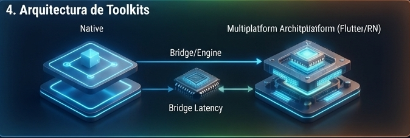

6. Librerías y Toolkits para Desarrollo Móvil
¿Qué es una Librería y qué es un Toolkit?
- Librería (Biblioteca): Es un conjunto de funciones y subrutinas reutilizables enfocadas en resolver un problema específico (ej. peticiones HTTP, procesamiento de imágenes o cifrado). El código de la aplicación controla el flujo y llama a la librería cuando lo necesita.
- Toolkit (Conjunto de Herramientas): Es un compendio más amplio de componentes de software, herramientas de diseño, SDKs y librerías integradas que proporcionan un marco de trabajo completo para construir aplicaciones (ej. Flutter SDK, Android Jetpack, React Native).
Librerías de Funciones Especializadas para Aplicaciones Móviles
- Networking: Retrofit, Ktor, Alamofire.
- Carga de Imágenes: Glide, Picasso, Coil, Kingfisher.
- Inyección de Dependencias: Hilt, Dagger, Koin.
Diferenciación de Toolkits Aplicables
Los toolkits multiplataforma (como Flutter con Dart o React Native con JavaScript/TypeScript) permiten compilar código nativo para múltiples sistemas operativos desde una única base de código, a diferencia de los toolkits nativos puros (Android Jetpack Compose / SwiftUI) optimizados específicamente para cada ecosistema.

Video Explicativo Recomendado
Profundiza en los conceptos clave de este tema a través de nuestra selección audiovisual en YouTube.
▶ Ver video explicativo en YouTube